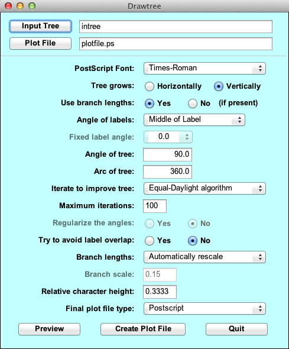
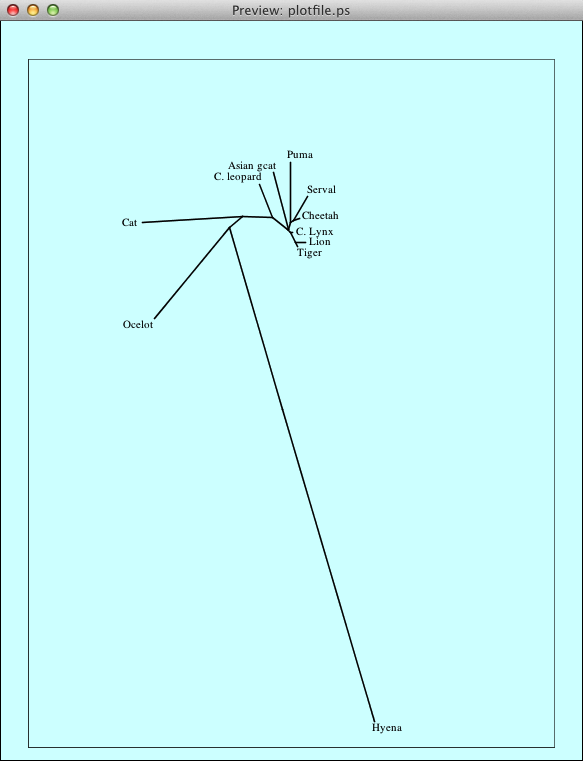

version 3.695
Drawtree
Written by Joseph Felsenstein and James McGill.
© Copyright 1986-2014 by Joseph Felsenstein. All rights reserved.
License terms here.
Drawtree interactively plots an unrooted tree diagram, with many options
including orientation of tree and branches, label sizes and angles, and margin
sizes. Particularly if you can use your computer screen to
preview the plot, you can very effectively adjust the details of the plotting
to get just the kind of plot you want.
To understand the working of Drawtree you should first
read the Tree Drawing Programs web page
in this documentation.
Java Interface
All Phylip programs will get Java interfaces in the 4.0 release. But under
some operating systems there are currently serious problems with Drawtree, so
it has received its Java interface early as part of the 3.695 bug fix release.
We do not anticipate changing this Java interface substantially in the 4.0
release, but don't be surprised if we do.
This new Java interface supersedes the old character-mode menu interface.
PHYLIP also contains versions of Drawgram and Drawtree that have the
character-mode menu interface. We have kept these available because PHYLIP
is used in many places as part of pipelines driven by scripts. Since these
scripts do not usually invoke the preview mode of Drawtree, we have disabled
the previewing of tree plotting in Drawtree in this release. Previewing is
available in the version of Drawtree that has the interactive Java interface.
The Java interface is different from the previous character-mode menu
interface; it calls the C code of Drawgram, which is in a dynamic library.
Thus, after the previewing is done, the code producing final plot file
should make plots that are indistinguishable from those produced by
previous versions of Drawgram.
Java Menu Interface
The Java Drawtree Interface is a modern GUI. It will run only on a machine that
has a recent version of Oracle Java installed. This is not a
serious limitation because Java is freeware that is universally available.
When you start the Drawtree Java interface it looks similar to the following, which has been edited to generate the plot which follows:

It has all the usual GUI functionality: input and output file selectors, drop
down menu options, data entry boxes and toggles. "Preview" brings up a nearly
WYSIWYG preview window that displays the Postscript plot created by the current
settings:

Each time you select "Preview" another preview window is generated, so that
multiple previews can be visible. This allows you to compare various display
options. When the plot has been fine tuned, clicking "Create Plot File" writes
the Postscript file that generated the last Preview to the plot file
specified. Note that if there are multiple preview windows open, the most recent
one is the one that shows how the tree in the final plot file
will look, since it will be plotted using the most recent settings.
All the functionality in the Java GUI is the same as in the equivalent menu
item in the character-mode menu interface. To ease the transition, we have
kept the text in the Java GUI as close as possible to the description in the
character-mode menu interface. So, for example, "L" in the old
interface, which has the helper message "Angle of labels",
maps to "Angle of labels" in the new interface. All the
detailed explanations of each label are found below.
Command Line Interface
The Command Line Interface gives the user access to a huge collection of
both display systems and output formats (some of them are historical
curiosities at this point, but they still work so there is no reason to remove
them). It can also be driven by scripting because it is a command line
interface. But, as most users have little experience with command line
systems, it is a bit daunting.
As with Drawgram, to run Drawtree you need a compiled copy of the
program, a font file, and a tree file. The tree file has a default name
of intree. The font file has a default name of "fontfile". If there is
no file of that name, the program will ask you for the name of a font file
(we provide ones that have the names font1 through font5).
Once you decide on a favorite one of these, you could make a copy of it
and call it fontfile, and it will then be used by default.
Once these choices have been made you will see the central menu of the
program, which looks like this:
Unrooted tree plotting program version 3.695
Here are the settings:
0 Screen type (IBM PC, ANSI)? ANSI
P Final plotting device: Postscript printer
B Use branch lengths: (no branch lengths available)
L Angle of labels: branch points to Middle of label
R Rotation of tree: 90.0
I Iterate to improve tree: Equal-Daylight algorithm
D Try to avoid label overlap? No
S Scale of branch length: Automatically rescaled
C Relative character height: 0.3333
F Font: Times-Roman
M Horizontal margins: 1.65 cm
M Vertical margins: 2.16 cm
# Page size submenu: one page per tree
Y to accept these or type the letter for one to change
|
These are the settings that control the appearance of the tree, which
has already been read in. You can either accept these as is, in which
case you would answer Y to the question and press the Return or Enter
key, or you can answer N if you want to change one, or simply type the
character corresponding to the one you want to change (if you answer N it
will just immediately ask you for that number anyway).
For a first run in the Java interface version you might accept
these default values and see what the result looks like.
You can resize the preview window,
though you may have to ask the system to redraw the
preview to see it at the new window size.
Once you are finished looking at the preview, you will want to
specify whether the program should make the final plot or change some of
the settings. The possible settings are listed below.
When you are ready to produce the final plot file, you should use the button
"Create Plot File" (if you are using the Java interface) or you should
type Y (if you are using the character-mode menu). In the Java-interface
version, the name of the plot file has been set in the dialog box near the
top of the Java window. It defaults to plotfile.ps. In the
character-mode menu, the file name defaults to plotfile.
If there is already a file of that name, the program will ask you whether
you want to Overwrite the file, Append to the file, or Quit (in the
character-mode menu version it also gives the option of writing to a new file
whose name you will be asked to supply.
THE OPTIONS
Below I will describe the options one
by one; you may prefer to skip reading this unless you are puzzled about
one of them.
- Postscript Font
- (In the character-mode menu version, selection F).
Allows you to select the name of the font that you will use for the species
names. For each of the plot file formats, this will either choose the
Postscript font (if they allow Postscript fonts) or the built-in
Hershey font that most closely matches it. Please understand
that for plot file formats that lack Postscript
font support, you will get one of our five Hershey fonts. The plot file types
that allow Postscript fonts are (as far as we know): Postscript, FIG 2.0, and
Idraw. In the preview of the tree in the Java-interface version, actual
Postscript fonts are always used, but with any plot file type other then these
three, the font is replaced by the closest Hershey font.
The size of the characters in the species names is
scaled according to the character heights you have selected in the menu,
whether plotter fonts or the Hershey font are used. Note that for some
plotter drivers (in particular FIG 2.0 and PICT) Postscript fonts can be
used in the final plot file only if the
species labels are horizontal or vertical (at angles of 0 degrees or
90 degrees). Otherwise Hershey fonts will be used.
- Use branch lengths
- (In the character-mode menu version, selection B). Whether the tree has Branch lengths that are
being used in the diagram. If the tree that was read in had a full set
of branch lengths, it will be assumed as a default that you want to use
them in the diagram, but you can specify that they are not to be used. If
the tree does not have a full set of branch lengths then this will
be indicated, and if you try to use branch lengths the program will
refuse to allow you to do so. Note that there is no way to use
negative branch lengths, so Drawtree automatically takes their absolute
values, and thus will plot a branch that has length -0.1 as if it has
length 0.1.
- Angle of labels
- (In the character-mode menu version, selection L). The angle of the Labels. Initially the branches connected to
the tips will point to the middles of the labels.
If you want to change the way the labels are drawn, the program
will offer you a choice between Middle, Fixed, Radial, and Along as the
ways the angles of the labels are to be determined. If you choose
Fixed, you will be asked if you want labels to be at some fixed
angle. This can be between 90.0 and
-90.0 degrees and you can specify that. You may have to try different angles
to find one that keeps the
labels from colliding: I have not guarded against this. However there
are additional options. Middle has the branch connected to that tip
point to the midpoint of the label. It puts the label at a fixed angle of 0.
Radial indicates that the labels are all aligned so as to
point toward the root node of the tree. Along aligns them to have the
same angle as the branch connected to that tip. This is particularly
likely to keep the labels from colliding, but it may give a misleading
impression that the final branch is long.
- Angle of tree
- (In the character-mode menu version, selection R). The rotation of the tree. This is
initially 90.0 degrees. The angle is read out counterclockwise from the
right side of the tree, so that increasing this angle will rotate the
tree counterclockwise, and decreasing it will rotate it clockwise.
The meaning of this angle is explained further under option A.
As you rotate the tree, the appearance (and size) may change, but the
labels will not rotate if they are drawn at a Fixed angle.
- Arc of tree
- (In the character-mode menu version, selection A). The Angle through which the tree is plotted.
This is by default 360.0 degrees. The tree is in the shape of an
old-fashioned hand fan. The tree fans out from its root node, each of
the subtrees being allocated part of this angle, a part proportional to
how many tips the subtree contains. If the rotation of the tree is (say)
90.0 degrees (the default under option R), the fan starts at +270
degrees and runs clockwise around to -90 degrees (i.e., it starts at the
bottom of the plot and runs clockwise around until it returns to the
bottom). Thus the center of the fan runs from the root upwards (which is
why we say it is rotated to 90.0 degrees). By changing option R we can
change the direction of the fan, and by changing option A we can change
the width of the fan without changing its center line. If you want the
tree to fan out in a semicircle, a value of a bit greater than 180
degrees would be appropriate, as the tree will not completely fill the
fan. Note that using either of the iterative improvement methods
mentioned below is impossible if the angle is not 360 degrees.
- Iterate to improve tree
- (In the character-mode menu version, selection I).
Whether the tree angles will be Iteratively
improved. There are three methods available:
- no (Equal Arc)
- This method, invented by Christopher Meacham in
PLOTREE, the predecessor to this program, starts from the root of the tree
and allocates arcs of angle to each subtree proportional to the number of
tips in it. This continues as one moves out to other nodes of the tree and
subdivides the angle allocated to them into angles for each of that node's
dependent subtrees. This method is fast, and never results in lines of the
tree crossing. However, it may result in rather large empty areas between
subtrees. It is the method used to make a starting tree all three
methods, so that the selection "no" leaves us with this tree and does not
improve the tree beyond this.
- Equal-Daylight algorithm
- This is the default method.
It iteratively improves an initial tree by
successively going to each interior node, looking at the subtrees (often
there are 3 of them) visible from there, and swinging them so that the
arcs of "daylight" visible between them are equal. This is not as fast as
Equal Arc but should never result in lines crossing. It gives particularly
good-looking trees, and it is the default method for this program. It will
be described in a future paper by me. This method has also been adopted by
David Swofford in his program PAUP*.
- n-Body algorithm
- This assumes that there are electrical charges located
along all the branches, and that they repel each other with a force
that varies (as electrical repulsion would) as the inverse square of the
distance between them. The tree adjusts its shape until the forces balance.
This can be computationally slow, and can result in lines crossing. I find
the trees inferior to the Equal-Daylight algorithm, but it is often worth a try.
- Maximum Iterations
- (Not available in the character-mode menu version). This is for the
Equal-Daylight algorithm or the n-Body algorithm. It sets how many passes
through the tree will be made when trying to achieve a good placement. The
more the greater the accuracy of the solution will be, but the slower the
program will run.
- Regularize the angles
-
(in the character-mode menu version, selection G).
If iterative improvement is not
turned on in option I (so that we are employing the Equal Arc method), this
option appears in the menu. It controls
whether the angles of lines will be "regularized".
Regularization is off by default. It takes the angles of the branches
coming out from each node, and changes them so that they are "rounded
off". This process (which I will not fully describe) will make the
lines vertical if they are close to vertical, horizontal if they are
close to horizontal, 45 degrees if they are close to that, and so on.
It will lead to a tree in which angles look very regular. The size of
angle to which they will round off the angles varies with the number
of tips on the tree. You may or
may not want that. If you are unhappy with the appearance of the tree
when using this option,
you could try rotating the angle of the tree slightly, as that may cause some
branches to change their angle by a large amount, by having the angles
be "rounded off" to a different value.
- Try to aboid label overlap
- (In the character-mode menu version, selection D).
Whether the program tries to avoiD overlap of the labels.
We have left this off by default, because it is a rather feeble option
that is frequently unsuccessful, and often make the trees look weird.
Nevertheless it may be worth a try.
- Branch lengths
- (In the character-mode menu version, selection S). On what
Scale the branch lengths will be translated
into distances on the output device. Note that when branch lengths
have not been provided, there are implicit branch lengths of 1.0 per
branch. This option will toggle back and forth between automatic
adjustment of branch lengths so that the diagram will just fit into the
margins, and you specifying how many centimeters there will be per unit
branch length. This is included so that you can plot different trees
to a common scale, showing which ones have longer or shorter branches than
others. Note that if you choose too large a value for centimeters per
unit branch length, the tree will be so big it will overrun the plotting
area and may cause failure of the diagram to display properly. Too small
a value will cause the tree to be a nearly invisible dot.
- Relative character height
- (In the character-mode menu version,
selection C).
The Character height, measured as a fraction
of a quantity which is the horizontal space available for the tree,
divided by one less than the number of tips. You need not worry about
exactly what this is: you can always change the value (which is
initially 0.3333) to make the labels larger or smaller. On output devices
where line thicknesses can be varied, the thickness of the tree lines will
automatically be adjusted to be proportional to the character height,
which is an additional reason you may want to change character height.
- Scale of branch length
- (In the character-mode menu version,
selection R). How the branch lengths will be recalculated into distances on the
output device. Note that when branch lengths have not been provided, there are
implicit branch lengths specified by the type of tree being drawn. In the Java
interface version, you can enter how many centimeters there will be per unit
branch length. In the character-mode version the selection will toggle back
and forth between letting you select the scale and automatically
rescaling the tree so
that the diagram will just fit into the margins.
This is included so that you
can plot different trees to a common scale, showing which ones have longer or
shorter branches than others. Note that if you choose too large a value for
centimeters per unit branch length, the tree will be so big it will overrun the
plotting area and may cause failure of the diagram to display properly. Too
small a value will cause the tree to be a nearly invisible dot.
- Margins:
- (In the character-mode menu version, selection M). The
horizontal and vertical margins in
centimeters. You can enter new margins (you enter new values for
both horizontal and vertical margins, though these need not be different
from the old values). For the moment I do not allow you to specify left
and right margins separately, or top and bottom margins separately. In
a future release I hope to do so.
- Final plot file type
- (in the character-mode menu version, menu
selection P). This allows you to choose the Plotting device or file
format. We have discussed the possible choices in the
draw programs documentation web page.
In the Java version they are Postscript, PICT, PCL, Windows BMP, FIG 2.0,
Idraw, VRML, or PCX. In the character-mode menu version there is a longer
list of plot file types.
- #
- (charater-mode menu version only) The number of pages
per tree. Defaults to one, but if
you need a physically large tree you may want to choose a larger
number. For example, to make a big tree for a poster, choose a larger
number of pages horizontally and vertically (the program will ask you
for these numbers), get out your scissors and paste or tape, and
go to work.
- O
- (character-mode menu version only) This is an option
that allows you to change the menu window
to emulate an ANSI terminal or an IBM PC terminal. Generally you will not
want to change this.
I recommend that you try all of these options (particularly if you can
preview the trees). It is of particular use to try trees with different
iteration methods (option I) and
with regularization (option G).
You will find that a variety of effects can be achieved.
Afterword
I would appreciate suggestions for improvements in Drawtree, but please
be aware that the source code is already very large and I may not be
able to implement all suggestions.